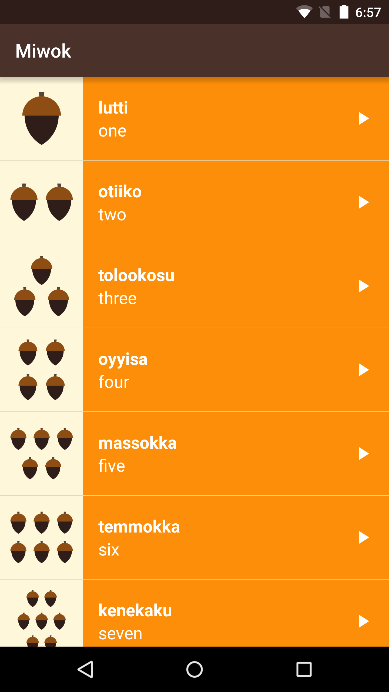
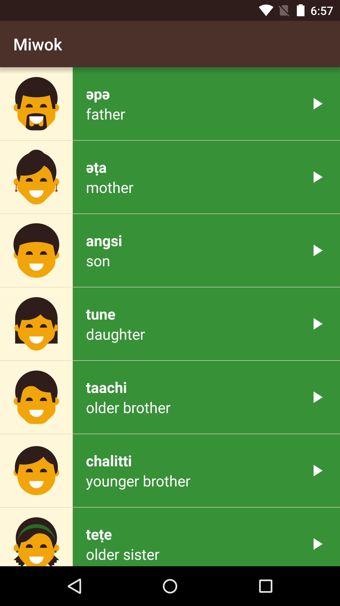
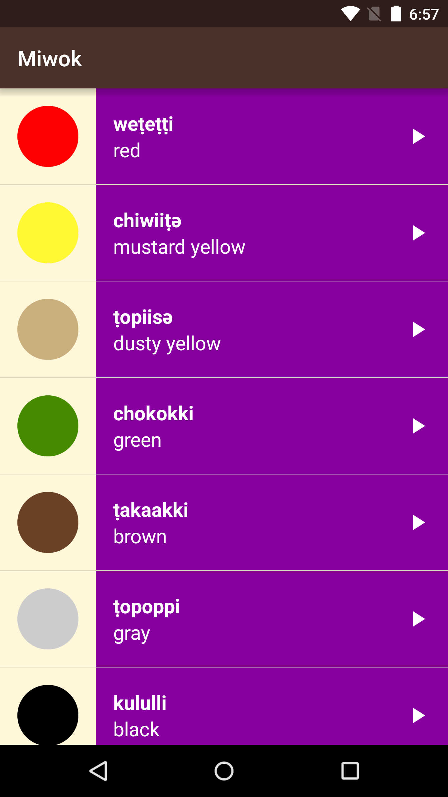
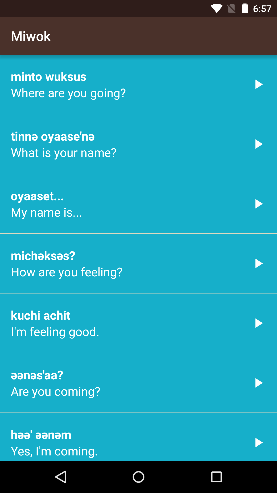

12. ViewPager and FragmentPagerAdapter
Step 3: Modify Main Activity So That It Uses A ViewPager
ViewPager and FragmentPagerAdapter
Question:
Now that the logic to display word lists is in the Fragment, you can move over to using a ViewPager in the MainActivity.
You will complete this task on your own, but feel free to refer to the Android Development Patterns video that you watched earlier. You can also review the earlier ViewPager sample app too.
This is what the app should look like when you’re done. When the app opens, you immediately see the list of number words. Then you can swipe horizontally between the lists of words. Behind the scenes, we have a single activity (MainActivity) that contains a ViewPager with 4 different Fragments. You can tell it’s a single activity because the name “Miwok” stays in the app bar as you swipe between screens.
   
Start Quiz:
Solution:
These are the changes needed to complete the quiz.
This is the state of the code after completing the quiz.
Here are the changes needed to switch to a ViewPager and FragmentPagerAdapter in the Miwok app.
1) First modify activity_main.xml layout to contain a ViewPager. You can delete the 4 category TextViews that used to be in this layout file.
<?xml version="1.0" encoding="utf-8"?>
<LinearLayout xmlns:android="http://schemas.android.com/apk/res/android"
xmlns:tools="http://schemas.android.com/tools"
android:layout_width="match_parent"
android:layout_height="match_parent"
android:background="@color/tan_background"
android:orientation="vertical"
tools:context="com.example.android.miwok.MainActivity">
<android.support.v4.view.ViewPager
android:id="@+id/viewpager"
android:layout_width="match_parent"
android:layout_height="match_parent"/>
</LinearLayout>2) In order to populate pages in the ViewPager, we need an adapter.
Create a new file for the adapter by right-clicking on the com.example.android.miwok folder in the Project directory pane. Then go to New > Java class. Create a new class called CategoryAdapter.
3) Android Studio will automatically create a new Java class in the CategoryAdapter.java file with these contents:
package com.example.android.miwok;
public class CategoryAdapter {
}4) Modify the CategoryAdapter class declaration line to extend the FragmentPagerAdapter class. Android Studio will report errors, warning you that you need to fill in required methods. You can hit Alt + Enter for a quick fix to the file, or right click and try to resolve the error. Android Studio will add in a bare-bones version of the methods you need to implement. Android Studio will also add in a constructor for the CategoryAdapter that takes in a FragmentManager. See below:
package com.example.android.miwok;
import android.support.v4.app.Fragment;
import android.support.v4.app.FragmentManager;
import android.support.v4.app.FragmentPagerAdapter;
/**
* Created by katherinekuan on 4/14/16.
*/
public class CategoryAdapter extends FragmentPagerAdapter {
public CategoryAdapter(FragmentManager fm) {
super(fm);
}
@Override
public Fragment getItem(int position) {
return null;
}
@Override
public int getCount() {
return 0;
}
}5) Override the methods with the logic we want in our Miwok app. We need to think about:
Question: How many pages do we need in the ViewPager?
Answer: 4 pages, so we should return 4 in the CategoryAdapter getCount() method.
Question: Which Fragment should we display if the position is 0? Or 1 or 2?
Answer: Within the CategoryAdapter getItem(int position) method, we create a conditional if/else statement to return the appropriate category fragment for the given position.
The resulting CategoryAdapter class looks like this:
package com.example.android.miwok;
import android.support.v4.app.Fragment;
import android.support.v4.app.FragmentManager;
import android.support.v4.app.FragmentPagerAdapter;
/**
* {@link CategoryAdapter} is a {@link FragmentPagerAdapter} that can provide the layout for
* each list item based on a data source which is a list of {@link Word} objects.
*/
public class CategoryAdapter extends FragmentPagerAdapter {
/**
* Create a new {@link CategoryAdapter} object.
*
* @param fm is the fragment manager that will keep each fragment's state in the adapter
* across swipes.
*/
public CategoryAdapter(FragmentManager fm) {
super(fm);
}
/**
* Return the {@link Fragment} that should be displayed for the given page number.
*/
@Override
public Fragment getItem(int position) {
if (position == 0) {
return new NumbersFragment();
} else if (position == 1) {
return new FamilyFragment();
} else if (position == 2) {
return new ColorsFragment();
} else {
return new PhrasesFragment();
}
}
/**
* Return the total number of pages.
*/
@Override
public int getCount() {
return 4;
}}
6) Then in the MainActivity, we can hook up the CategoryAdapter to power the ViewPager. Delete all the old code related to the 4 category TextViews.
All we need to do is find the ViewPager that was declared in the XML layout. Then create a new CategoryAdapter, and set the adapter onto the ViewPager (using the setAdapter method).
package com.example.android.miwok;
import android.os.Bundle;
import android.support.v4.view.ViewPager;
import android.support.v7.app.AppCompatActivity;
public class MainActivity extends AppCompatActivity {
@Override
protected void onCreate(Bundle savedInstanceState) {
super.onCreate(savedInstanceState);
// Set the content of the activity to use the activity_main.xml layout file
setContentView(R.layout.activity_main);
// Find the view pager that will allow the user to swipe between fragments
ViewPager viewPager = (ViewPager) findViewById(R.id.viewpager);
// Create an adapter that knows which fragment should be shown on each page
CategoryAdapter adapter = new CategoryAdapter(getSupportFragmentManager());
// Set the adapter onto the view pager
viewPager.setAdapter(adapter);
}
}7) Test the code to make sure everything runs.
8) If the app works as expected, delete the unnecessary files:
- NumbersActivity.java
- FamilyActivity.java
- ColorsActivity.java
- PhrasesActivity.java
- activity_category.xml layout file
Also delete the activity declarations from the AndroidManifest.xml file.
9) After all those deletions, test the app AGAIN to make sure everything works and you didn’t delete anything important. Make sure audio playback still works.
If you want to double-check your code against ours, this is the difference (or delta) for what changed in this coding task. This is the full state of the app at this point.
INSTRUCTOR NOTE:
Refer to the these resources from earlier in the lesson:
Android Development Patterns video on Tabs and ViewPager